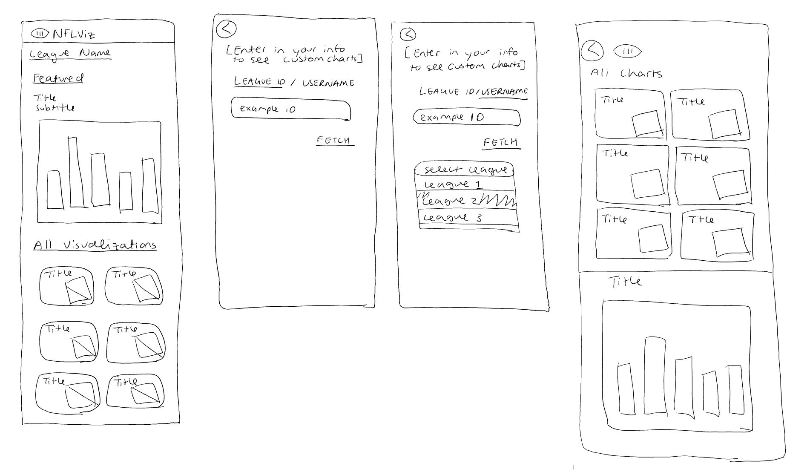
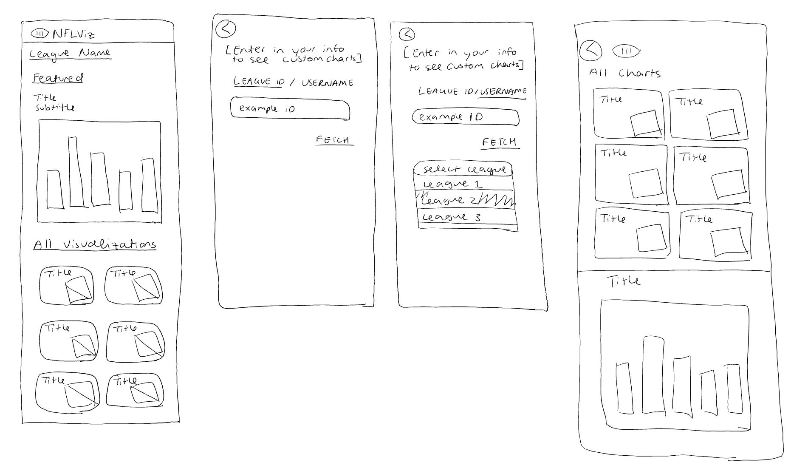

Overview
NFLViz.com is a site dedicated to using football data to display custom fantasy visualizations. I collaborated with the developer to prepare for an early 2021 launch. Together, we went through the design process to create and implement the NFLViz brand.
Team
Aarushi Venkatakrishnan, UX/UI
Advaith Venkatakrishnan, Developer
Timeline
1 month
The Vision
"NFLViz is a data visualization site. The plan is for the site to become a one-stop shop for all things football."
Task
After learning more about the mission of NFLViz, I set out to understand my role. We needed to design a responsive data visualization site that allows for future scalability. More so, I needed to create the NFLViz brand.
Requirements
- Designs should work for both mobile and desktop
- Visualizations should be screenshot-ready
- Logo should be usable across multiple types of media
- Allow for more fields to be easily incorporated (both regarding types of visualization and number)
- Entice the audience to use our service over/in addition to existing ones
Determining our Audience
While I’m definitely not new to football (#KeepPounding), my first step was to evaluate who NFLViz is aimed toward. After reviewing several football sites, data visualization sites, and having some informal conversations with various fantasy football players, I classified 2 main users that we would want to target:

The young, tech-savvy fantasy football player who’s all about stats.

The veteran player who’s used to the trade.
Mapping out the Flow
Keeping in mind the layouts of some popular apps, we wanted our user flow to be simple. Data in general can be intimidating to deal with, so we wanted to make sure our site exemplifies ease. With some feedback, I settled to create a more in-depth flow, trying to minimize screens and pathways for the user.
 

lo-fi sketches
.svg)
mobile wire-frame
.svg)
desktop wire-frame
Design Ideas
Once we understood how we wanted the user to navigate the site, I created some sample designs. When we took a look, we could see which features worked and which didn’t, which helped us see we were heading in the right direction.
Final Design

Final Thoughts
- Working on my first UX/UI project taught me a lot about the design process, particularly the importance of iteration and user feedback. It's one thing to look at a product from a designer's perspective than a user's, which was really emphasized in this project.
- My definition of the word "research" truly expanded over the course of this project. While I would normally be accustomed to reading scientific journals and talking to professors, my research for this project came directly from aspects of my everyday life. Now, whenever I'm using an app or a webpage, I'm finding that I'm noticing more and more details than I used to.
- My last and most important takeaway is understanding the field. Understanding how to make a universally appealing design was challenging and not something I was used to. It really helped to make quick sketches and show them to the developer, which both helped me understand more about the creation process and get direct feedback.